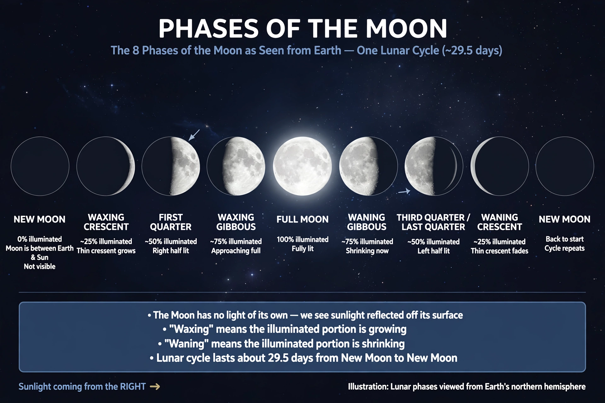

| Lunar calendar | |
 | |
| Based on | Phases of the Moon |
|---|---|
| Synodic month | ≈ 29.5306 days |
| Lunar year | ≈ 354.37 days (12 months) |
| Examples | Islamic calendar (pure lunar); Hebrew and Chinese calendars (lunisolar) |
A lunar calendar is a calendar based on the monthly cycles of the Moon's phases (synodic months, lunations), in contrast to solar calendars, whose annual cycles are based on the solar year. The most widely observed purely lunar calendar is the Islamic calendar (Hijri calendar). Many other calendars traditionally classed as lunar are in fact lunisolar: extra months are intercalated periodically to keep them aligned with the seasons — examples include the Hebrew, Chinese, Hindu, and Buddhist calendars.
Each lunation is approximately 29.5 days, so lunar months commonly alternate between 29 and 30 days. Twelve lunar months total about 354.37 days — roughly 11 days shorter than the solar year of about 365.24 days. In a purely lunar calendar such as the Islamic calendar, the months therefore drift through the seasons, completing a full cycle roughly every 33 years.
Lunisolar calendars solve the drift by intercalation. The Metonic cycle, known in Babylonian, Hebrew, and Chinese calendrics, observes that 19 solar years are almost exactly 235 lunations, so 7 leap months are inserted over a 19-year span to keep lunar months in step with the seasons.
| Calendar | Type | Notes |
|---|---|---|
| Islamic (Hijri) | Pure lunar | Epoch: the Hijra, 622 CE; months begin at the sighting or calculated start of the new moon crescent; adopted under Caliph Umar. |
| Hebrew | Lunisolar | 19-year Metonic cycle with a leap month (Adar I) in 7 of 19 years. |
| Chinese | Lunisolar | Months begin at the new moon; leap months inserted to keep the winter solstice in the 11th month. |
| Hindu calendars | Lunisolar | Regional variants; adhika māsa ("extra month") added roughly every 32–33 months. |
| Thai and other Buddhist calendars | Lunisolar | Related to Hindu calendrical traditions. |
Lunar reckoning is among humanity's oldest time-keeping practices; tally sticks and cave markings from the Upper Palaeolithic have been interpreted — controversially — as lunar tallies. The earliest well-documented lunar calendars are those of Mesopotamia: the Sumerians and Babylonians used lunisolar calendars whose intercalations were later regularized into the Metonic pattern. From Mesopotamia the basic scheme spread to the calendars of the Levant, Greece, and beyond.
The Islamic calendar, instituted in 638 CE during the caliphate of Umar ibn al-Khattab with its epoch retrojected to the Hijra of 622 CE, abandoned intercalation, making it the principal purely lunar calendar still in civil and religious use; it fixes Ramadan, Eid al-Fitr, Eid al-Adha, and the Hajj season.
Lunar and lunisolar calendars continue to govern religious observances and traditional festivals worldwide: Ramadan and the Eids; Passover and the Jewish High Holy Days; Chinese New Year and the Mid-Autumn Festival; Diwali and other Hindu festivals. Many East and South Asian societies pair a lunisolar traditional calendar with the civil Gregorian calendar.
See also: Islamic calendar, Hebrew calendar, Chinese calendar, Lunisolar calendar, Metonic cycle